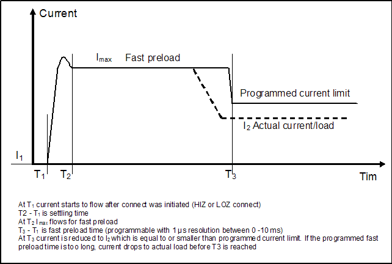
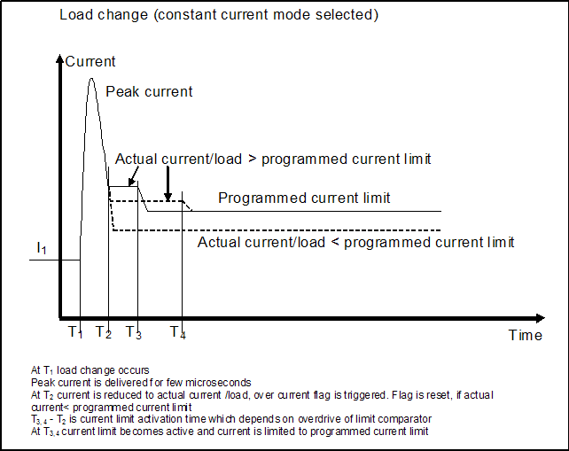
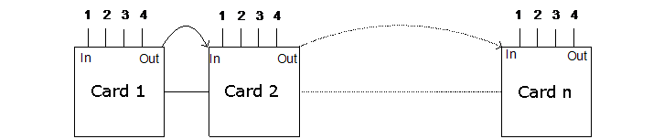

UHC4T features
Besides its various power, operating, and measurement modes, the DC Scale UHC4T card offers further features, for example:
- High-Speed sampler for differential voltage monitoring
- Fast preload mode
- Peak mode
- Voltmeter mode
- Ganging and unganging DC Scale UHC4T channels across cards
- Sink power < Source power
- Sense connection test
To protect your test equipment in case of a shortage, the UHC4T card also provides the following protection features:
High-Speed sampler
The UHC4T features a high-speed sampler for differential voltage monitoring.
You can use the UHC4T high-speed sampler (also referred to as high-speed digitizer) to measure, for example, the supply voltage drop during the execution of critical device patterns.
You can use the high-speed sampler alternatively to the UHC4T-ADC. When the high-speed sampler is active, the ADC is inactive.
You can execute high-speed sampler measurements while the DPS part, the UHC4T-ADC, is connected or disconnected. The high-speed sampler has its own signal pogo pins. For details see UHC4 / UHC4T pogo pin assignment.
In high-power mode and in precision mode, the UHC4T card uses the same high-power pogo pins.
A typical application for the high-speed sampler are AC scan tests. During an AC scan, a device sometimes sinks a large current before the UHC4T can react. To prove the test for these drops, which can be the reason for marginal tests, you can use the high-speed sampler.
Fast preload mode
The fast preload mode allows to charge large capacities in a short time.
If the 40 A current force range is selected, a current of 40 A maximum is forced for a programmable time (0 - 10 ms with a resolution of 0.001 ms), independent of the actual current limit setting. The preload starts when the DUT is connected. Afterwards the UHC4T returns to its previous state. The fast preload settings are identical for all channels of a gang group. You cannot use this mode for voltage changes.
The fast preload mode must be either enabled with a firmware command (the default is disabled) or with a programmed time in an equation. For details see ms_fast_preload in DPSPINS resources.

Peak mode
In peak mode a peak current is delivered for a few microseconds. The peak current can be larger than 40 A.
This mode minimizes the step response time after a load change. The peak mode cannot be switched off.
In constant current mode the maximum current is equal to the actually programmed current limit.

Voltmeter mode
To use the voltmeter mode you must apply the himp connect state (high impedance measurement mode).
The high impedance measurement mode opens the AC_Force and H_Imp relays, and closes the AC_Sense relay. In this mode neither voltage nor current is forced.
The input leakage currents determine the impedance. See also UHC4T specifications.
Ganging and unganging DC Scale UHC4T channels
To achieve a higher output current, you can operate multiple channels of DC Scale cards in parallel, known as ganging. Ganging is the combining of multiple DPS channels to provide a higher current than a single DPS channel could provide.
The UHC4T supports the channel ganging on the card and the ganging of channels across multiple cards of the same type.
You also cannot gang UHC4T channels with other DPS channels.
Each UHC4T card has an input and an output line, which must be connected via the DUT board. The UHC4T has a "double" pogo assembly, one with the input line, the other with the output line (see UHC4 / UHC4T pogo pin assignment).

When ganging on the card, the input and output lines of each channel are connected in the order:
Card: input -> channel1 -> output channel1 -> input channel2 -> channel2 -> .... -> channel4 -> output
To gang across either UHC4T cards you must build a non-interrupted ganging chain. The sequence of the cards is freely definable. The channel with the open input connection is the master of the ganged channels. For further details see UHC4T specific setup tasks and UHC4T pogo pin assignment.
The following rules apply when ganging UHC4T channels:
- You can switch every output/input connection for example, ganging of channel 1,2 and channel 3,4 is possible).
- You can gang any number of UHC4T cards within a system without any order restriction.
- You cannot exceed the maximum current per UHC4T card (160 A @ 2.0 V).
For the "unganging" of UHC4T cards you have to differentiate between two cases:
- Unganging during measurement:
In this case the low and high pass/fail limits of the current measurement tell the system which current is expected. The gang is reduced to the smallest gang (or measurement range) which can provide the expected (measurement) current.
This unganging of UHC4T channels does not disrupt the supply of voltages to the device.
- Ungang connect state:
This state cannot be combined with the above "Unganging during measurement". The current limits (force setup) tell the system which current is expected. The gang is reduced to the smallest gang (or measurement range) which can provide the (expected) force current. This kind of unganging is a safety feature, because during connect the current clamp is not active (see "Peak mode" above). So only the number of channels in a gang or the precision mode (if there is only one channel) limit the current flowing.
You can use the ungang connect state as part of a power-on sequence. First activate a setup with small currents and try to connect in ungang connect state. If there is no shortage disconnect again, and then activate a setup with a larger current.
Sink power < Source power
Within limits, the sink power on UHC4T cards, that are connected to the same DC-DC, can be larger than the source power. The limits for each channel of a card are:
- 0.6 V: 40 A
- 1.0 V: 7 A
- 2.5 V: 4 A
- 4.0 V: 2 A
If the sink power is higher, the test system shuts down. See also UHC4T specifications.
UHC4T protection features
The main difference between an ultra high current DPS and a normal DPS is the need to protect the ATE equipment in case of a shortage, for example the needles on a probe card.
Therefore, the UHC4T DPS provides a disconnect flag and additional features to protect your test equipment, for example:
- Overvoltage protection
- Safety line
- Current limiter protection avoids that the system is switched of due to overpower.
Disconnect flag
If any of the protection features triggers a disconnection of a UHC4T channel, it also sets a disconnect flag.
For example, if a user-defined voltage drop is reached (that is, the absolute value is too high), the AC relay is opened, the channel disconnects, and the disconnect flag is set.
When the disconnect flag was set, you must reconnect before you can continue.
Overvoltage protection (sense line per channel)
The overvoltage protection provided by UHC4T continuously measures and compares the force voltage at output and the force voltage at load. If the difference between the two voltage values is above the limit, the output channel disconnects after a time delay. In this case both the overvoltage protection flag and the disconnect flag are set.
The voltage limit for the disconnect can be programmed from 0 mV to 500 mV in steps of 1 mV. The overvoltage protection is always on, in all current ranges, except for the time the fast preload mode is on.
There are separate comparators for both the force and the return line on both the source and the sink path (4 in total). They compare the voltage drop on the source path and voltage drop on the return path at sense point.
For a force drop the UHC4T measures the voltage drop between force (AC_Force) and sense+ (AC_Sense) at output of the UHC4T card. For a return drop it measures between sense- and ground (PGND).
See also DPSPINS resources (max_voltage_drop_force/return).
Safety line
A safety line on the UHC4T is fed to the DUT board and pulled high by +5 V. To operate the UHC4T this voltage must be constantly high. The safety lines of several UHC4T cards can be connected on the DUT board. When the voltage drops, all UHC4T channels of the involved cards are disconnected. In this case, the DUT board disconnect flag is set1).
You can use this mechanism to simultaneously disconnect all UHC4T channels by an external switch.The safety line is independent from the DUT board connect sensor. But this mechanism can also be used to detect a DUT board which is not properly connected or assembled. In this case the UHC4T disconnects.
Current limiter protection
The UHC4T provides an integrated current limiter protection mode. When activated, the shutdown of the system due to too high power consumption of the UHC4T card can be avoided. When a protection case occurs, a flag is set and the related channel is disconnected to interrupt the current flowing into the DUT before the maximum power consumption of the card is exceeded.
Note that a protection case indicates an overload of the 12V card cage power rail which supplies up to two UHC4T cards installed in adjacent card cage slots. In case one UHC4T triggers the protection mode, an UHC4T present in the neighbor slot (even/odd slot pair) is affected in its operation as well. Triggering of the protection mode should therefore be seen as an indicator of an overload condition which must be avoided by defining slower voltage ramps.
For more information, see section Current limiter protection in UHC4T specific setup tasks.
Other flags and alarms
The following security features also set the disconnect flag:
- Constant current flag and constant voltage flag
The constant current check is always active. You can specify a delay of up to 0.065 seconds before the channel disconnects.
See also DPSPINS resources (disable_const_curr_check / ms_const_curr_disconnect).
- Unregulated state
In case of an unregulated state condition, the affected channel is reported and disconnected.
Sense connection test
The UHC4T channels features a sense connection test unit, which is also know as Kelvin test unit.
Kelvin test or sense connection test means that the connection from the force lines to the sense lines on the DUT board or at the DUT pins is verified with a small test current applied. A PASS/FAIL result is returned.
The Kelvin test unit applies a small test current to the tested force to sense (FS) connection and measures the voltage drop between the two lines. The measured voltage is used as criterion for the pass/fail decision and should be near 0.0 V for a good FS connection.
For information regarding the sense connection check, refer to DC test method DpsConnectivity and to API HW_STATE.checkKelvinStatusParallel().
See also Sense connection test in UHC4 / UHC4T recommendations for use.
Functional changes
- Introduced in SmarTest 6.5.0
- SmarTest 7.3.2: Current limiter protection mode (UHC4T only)
- SmarTest 7.3.2: Measure Voltage Drop and Sampler fields of UHC4 and UHC4T hardware views generate sample test method code